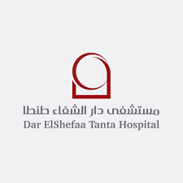
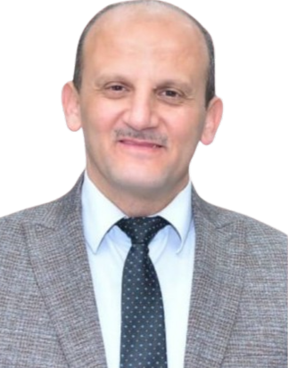
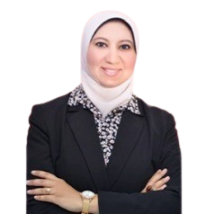
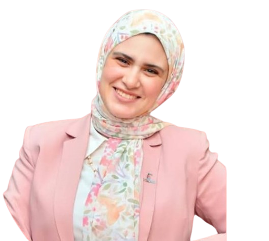
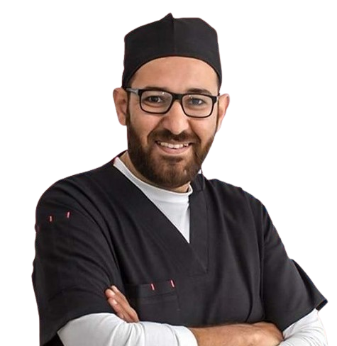
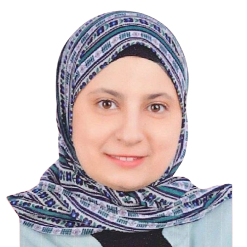
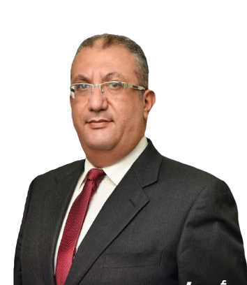
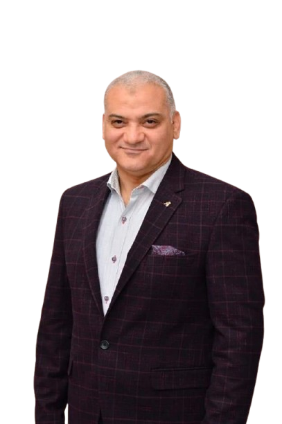

فريق العمل

مستشفي دار الشفا للجراحات الدقيقه - طنطا
بـنوعدك بــأفضل تــجربـة علاجيـة وخدمة طبيـة مٌقـدمة من مستشفى دار الشفاء علـى يد نخبـة من الأطباء ومتخصصي الرعـاية الصحية. اختار دار الشفاء، اختار التطور حقيقي في رحلة علاجكالأستاذ الدكتور/ وليد مصطفى
أستاذ جراحة التجميل بكلية الطب جامعة طنطا

الأستاذ الدكتور/ محمد درويش
رئيس قسم التخاطب كلية الطب جامعة طنطا

دكتور/ وسام السعدني
استشاري ومدرس جراحة الفم والوجه والفكين بكلية طب الأسنان جامعة طنطا
دكتور/ محمد سعدة
استشارى جراحة الأطفال والمناظير رئيس قسم جراحة الأطفال مستشفى الأطفال التخصصى ببنها دكتوراة جراحة الأطفال وإصلاح التشوهات الخلقية - طب عين شمس الزمالة المصرية لجراحة الأطفال

دكتور/ رحاب عبد الله
استشاري الاستعاضة والتأهيل ما قبل الجراحة لأطفال الشفة الأرنبية - مدرس بكلية الأسنان جامعة طنطا

دكتور/ ابراهيم منصور
استشاري طب أسنان الأطفال

دكتور/ منال محمود
استشاري التغذية العلاجية والجهاز الهضمي للأطفال – استشاري دولي الرضاعة الطبيعية

دكتور/ عمرو جلال
استشاري الأنف والأذن والحنجرة بمعهد السمع والكلامدكتور/ حسام الشريف
أستاذ الأنف والأذن والحنجرة - كلية الطب - جامعة طنطا

تابعنا وكن جزءًا من التوعية